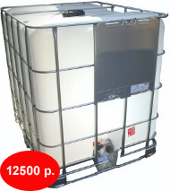

Пластиковая емкость 1 куб. Цена 12 500 рублей.
Одна из самых востребованных емкостей это пластиковая емкость объемом 1 куб.м, подходящие для транспортировки жидкостей.
Пластиковая емкость 1 куб предназначены для хранения и транспортировки жидкостей с плотностью до 1,9 г/куб.см. Пластиковая емкость 1 куб.м представляет собой емкость, помещенную в металлический каркас, что позволяет оперировать с наполненной емкостью. Пластиковая емкость 1 куб.м может быть погружена в транспорт или выгружена из него вилочным погрузчиком без риска повреждения.
Допускается штабелирование пустых емкостей в 3 ряда по высоте. Наполненных - в 2 ряда. Диапазон рабочих температур - от -40 до +50 градусов Цельсия. Пластиковая емкость 1 куб.м может быть использована многократно.
Срок службы емкости - 5 лет.
Размеры, Длина х Ширина х Высота: 1200 мм х 1000 мм х 1175 мм. Масса 61 кг. Поддон деревянный.
Мы поставляем только новые емкости. Цена - 12 500 рублей. Бесплатно доставим по Москве и ближайшему подмосковью от 3-х штук.
Чтобы приобрести пластиковые емкости 1 куб. или за дополнительной информацией обращайтесь по телефону (495) 745-60-52 или электронной почте 7456052@mail.ru